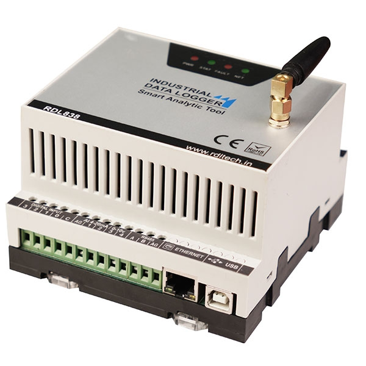
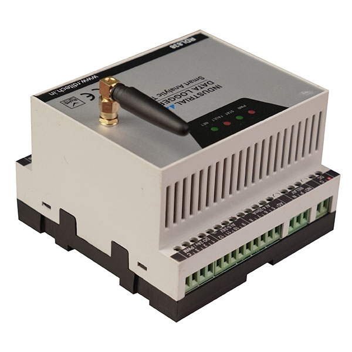
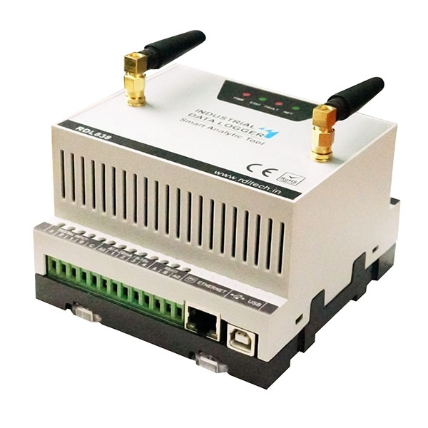
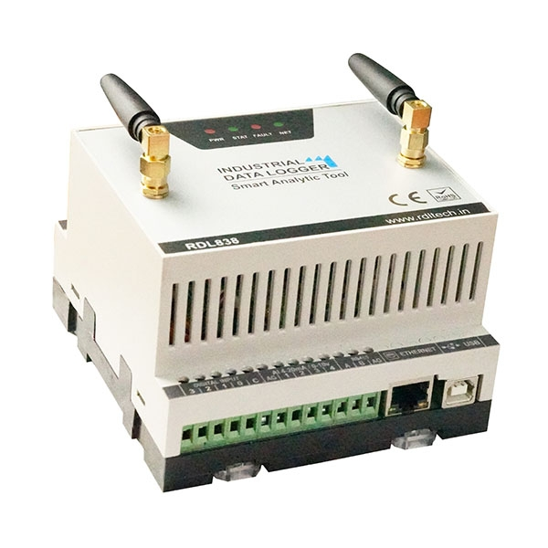
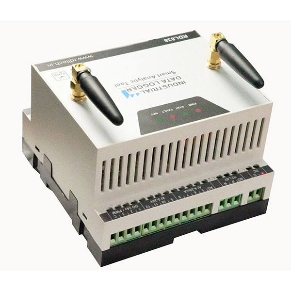
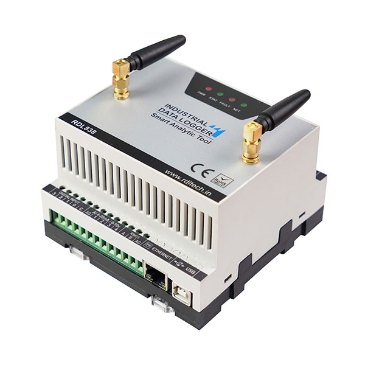
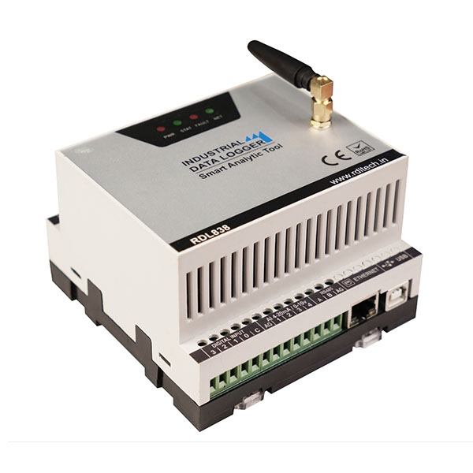
Key Features
- 12 isolated analog input channels (0-10V, 0-24V, 4-20mA) with 16-bit resolution at 860SPS
- 4 isolated 24V digital inputs
- 3 isolated 24V digital outputs/PWM
- 1 relay (NO & C)
- Isolated RS485 for MODBUS RTU
- Isolated Ethernet 10/100Mbps MODBUS TCP
- USB-Device interface for configuration
- WiFi/2G/4G/LTE wireless communication
- Configurable data types (INT, LONG INT, FLOAT, DOUBLE FLOAT, Raw Hex)
- Industrial-grade isolated and protected IO with EMC/EMI compliance
- Scaling factor configuration for analog channels
- JSON/MQTT/FTP protocol support
- Secure SSL communication
- 16GB inbuilt storage
- CSV file logging during network failures
- Offline data transmission upon reconnection
- Remote relay/digital output control
- Configurable alarms
- Auto socket/server connection maintenance
- Cloud platform support (Microsoft Azure, AWS)
Specifications
| Specification | Details |
|---|---|
| Dimensions | 280mm L × 190mm W × 130mm H |
| Flammability Rating | UL 94 HB |
| Impact Resistance (EN 62262) | IK07 |
| Temperature Range | -5°C to 60°C |
| Electrical Insulation | Totally Insulated |
| NEMA Class | 1, 4, 4X, 12, 13 |
| Mounting | Wall Mount / DIN Rail |
Order Information Table
| Features | RDL838A 4G / LTE |
RDL838B Wi-Fi |
RDL838C 4G / LTE + GNS + GPS |
|---|---|---|---|
| Isolated Digital 4CH Inputs | ✓ | ✓ | ✓ |
| 4CH Isolated Analog Input 0-24V | ✓ | ✗ | ✓ |
| 4CH Isolated Analog Input 4-20mA | ✓ | ✓ | ✓ |
| Relay 5 Amps 250V | ✓ | ✗ | ✓ |
| Isolated RS485 RTU | ✓ | ✓ | ✓ |
| Ethernet Modbus TCP | ✓ | ✓ | ✓ |
| USB | ✓ | ✓ | ✓ |
| 4G / LTE | ✓ | ✗ | ✓ |
| Wi-Fi | ✗ | ✓ | ✗ |
| GNS / GPS | ✗ | ✗ | ✓ |
| 16GB SD Card Storage | ✓ | ✓ | ✓ |
Note: ✓ - Available, ✗ - Not Available
Configuration Manager
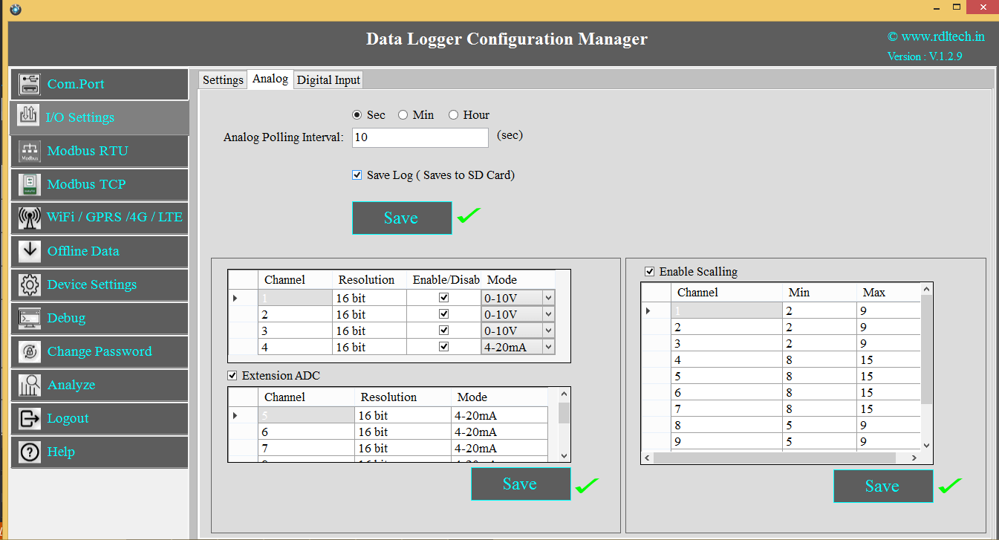
Configure analog channel resolution, mode (0-10V / 4-20mA) and scaling limits from the Data Logger Configuration Manager software.
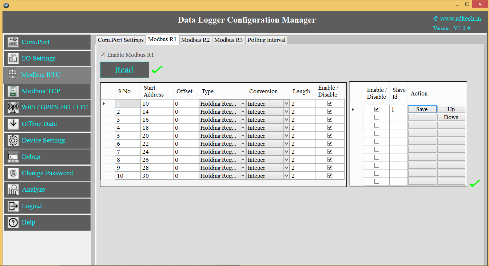
Configure Modbus RTU registers, data types and polling for each connected slave device.
Application Diagrams
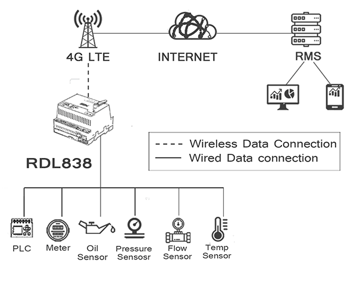
RDL838 connects PLCs, meters and sensors (oil, pressure, flow, temperature) to the cloud-based RMS over 4G LTE for remote monitoring.
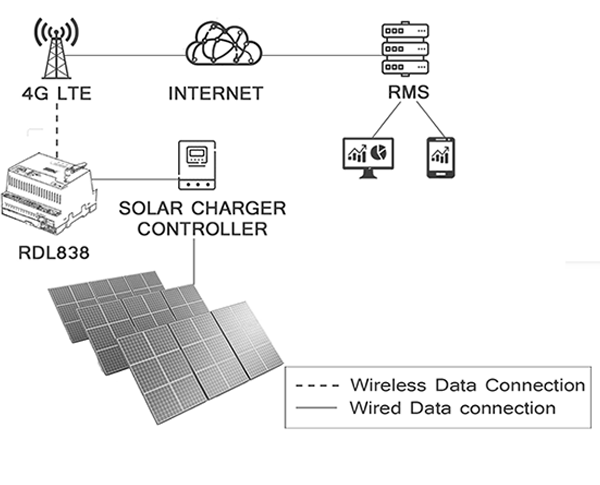
RDL838 paired with a solar charger controller for solar grid monitoring, sending data to the RMS via 4G LTE.
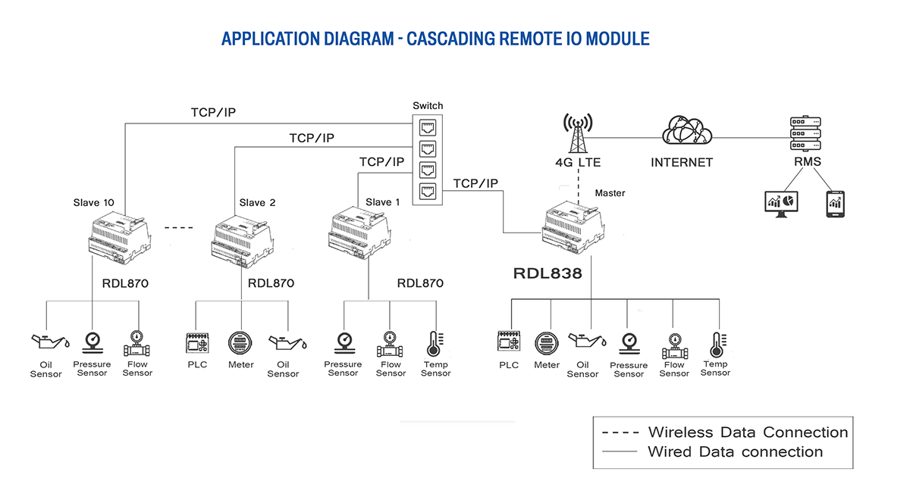
RDL838 as a Modbus TCP master cascading multiple RDL870 remote IO modules, each connected to field sensors via Modbus RTU.
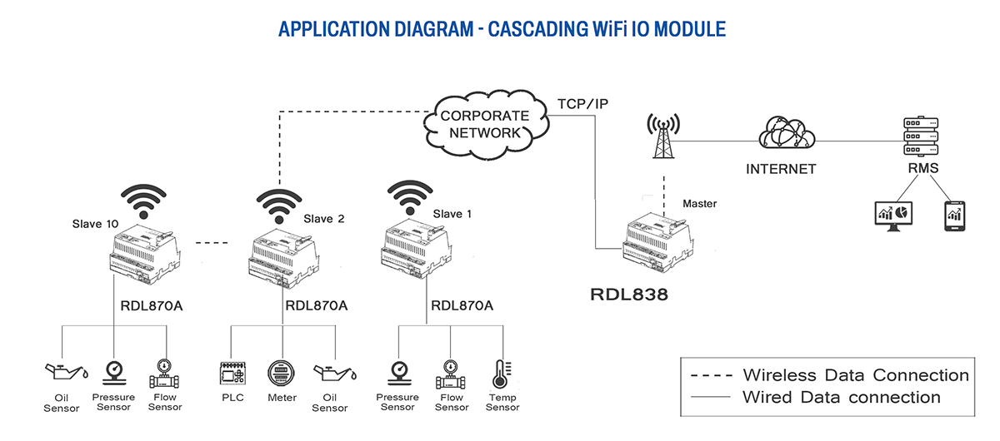
RDL838 master gathering data from multiple RDL870A WiFi IO modules over a corporate network and forwarding to the RMS.
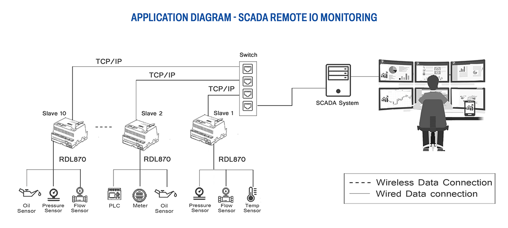
RDL870 remote IO modules feeding a local SCADA system over TCP/IP via switch for centralized monitoring.
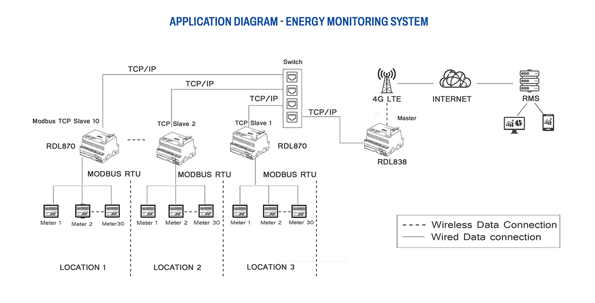
Multi-location energy monitoring with RDL870 units reading energy meters via Modbus RTU and reporting to RDL838 over TCP/IP and 4G LTE.
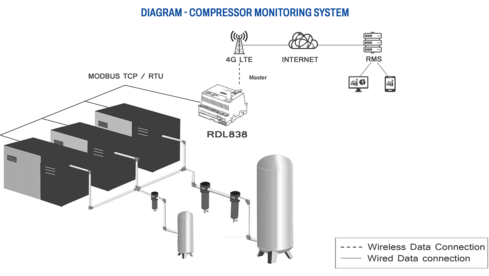
RDL838 monitoring multiple compressors over Modbus TCP/RTU and reporting status to the RMS via 4G LTE.
Applications
- Remote Monitoring System (RMS)
- Production and process monitoring
- Utilities monitoring
- Condition monitoring
- Environment monitoring
- Industrial smart grid
- Solar grid integration
- Cold storage monitoring
- District metering
- Water treatment
- Generator monitoring
- Greenhouse operations
- Emergency warning systems
- Standard SCADA applications
Enclosure Options (IP65/66)
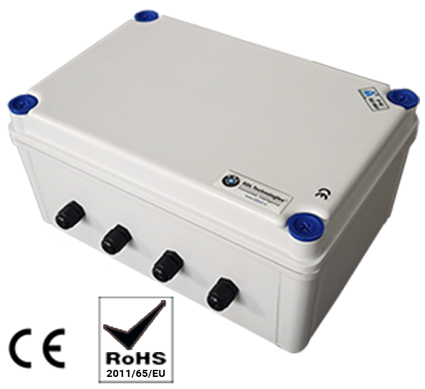
| Order Code | Description |
|---|---|
| RDL871 | Basic enclosure with space for data logger mounting |
| RDL871A | Includes 14.8V 10000mAh battery pack with mounting space |
| RDL871B | Includes 80-240VAC 2A power supply with mounting space |
IoT Starter Kit - Energy Monitoring (RDL874 / RDL874A)
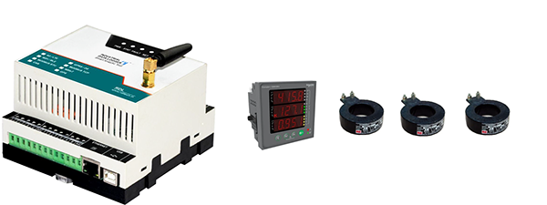
Package Contents:
- Data Logger RDL838 - 1 unit
- SMPS 24V 2A - 1 unit
- 3-phase energy meter with Modbus RS485 - 1 unit
- CT coils (50A) - 3 units
- Open Source Web SDK
- JSON/MQTT protocol support
| Connectivity | Order Code |
|---|---|
| WiFi | RDL874 |
| 4G / LTE | RDL874A |
IoT Starter Kit - Fuel, Oil Level & Temperature Monitoring (RDL875 / RDL875A)
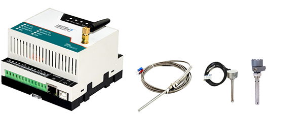
Package Contents:
- Data Logger RDL838 - 1 unit
- SMPS 24V 2A - 1 unit
- Fuel level sensor module with Modbus RS485 - 1 unit
- Oil level sensor with Modbus RS485 - 1 unit
- 4-20mA temperature sensor - 1 unit
- Open Source Web SDK
- JSON/MQTT protocol support
| Connectivity | Order Code |
|---|---|
| WiFi | RDL875 |
| 4G / LTE | RDL875A |
Additional Services
- OEM & White Label Services: Available with minimum 500-unit order quantity
- Custom Solution Development: Adaptability to structural, functional, and aesthetic customization requirements
Certifications
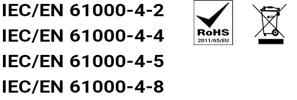